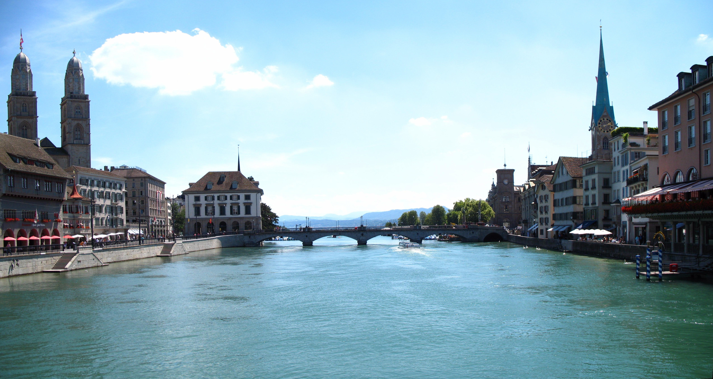
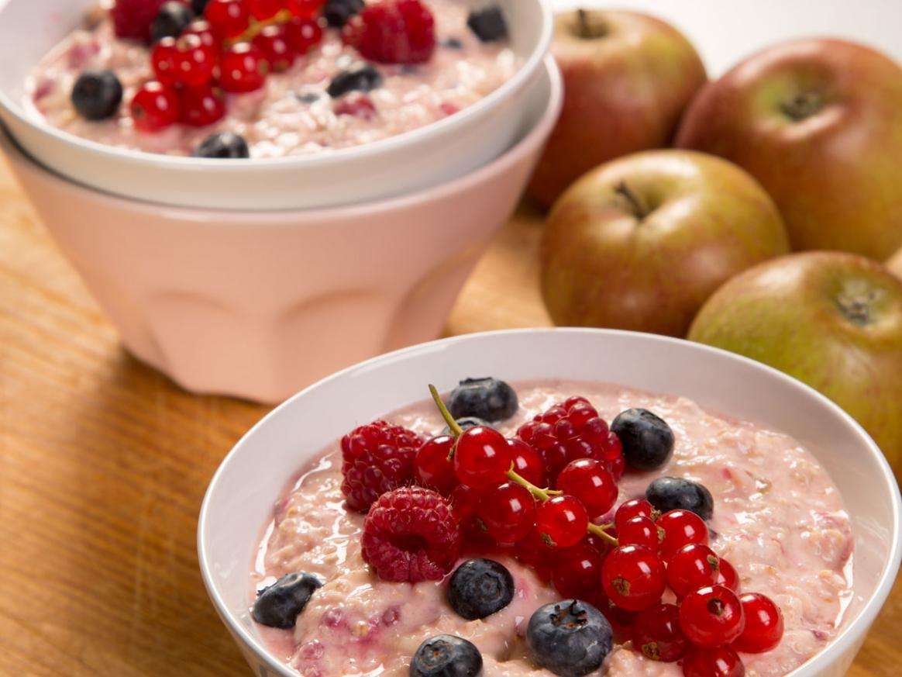
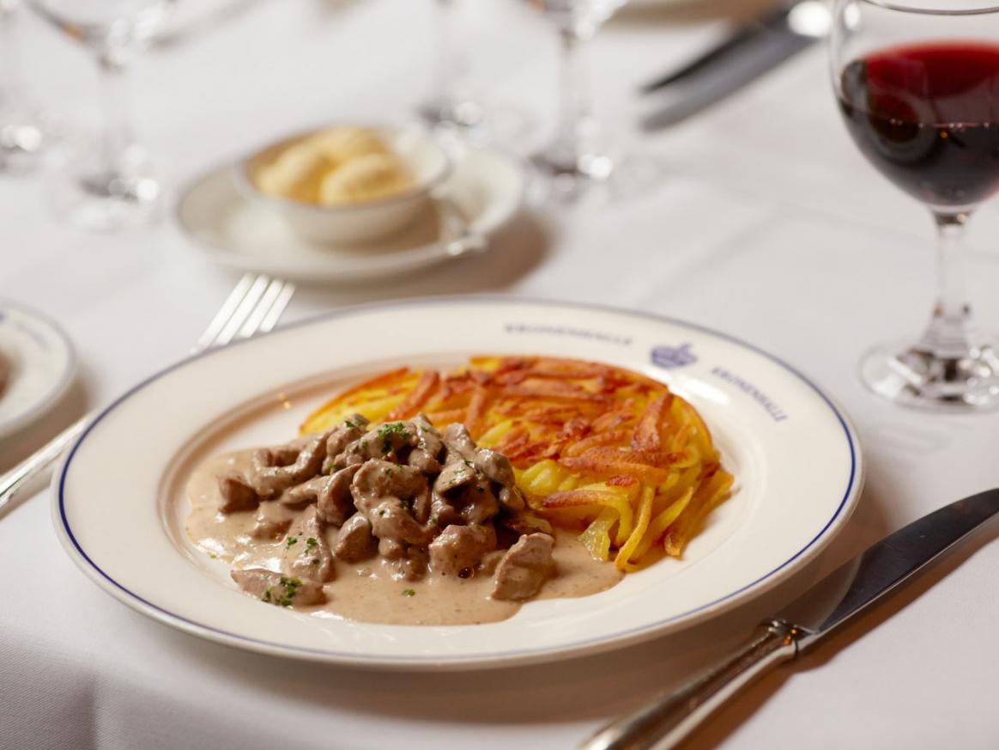
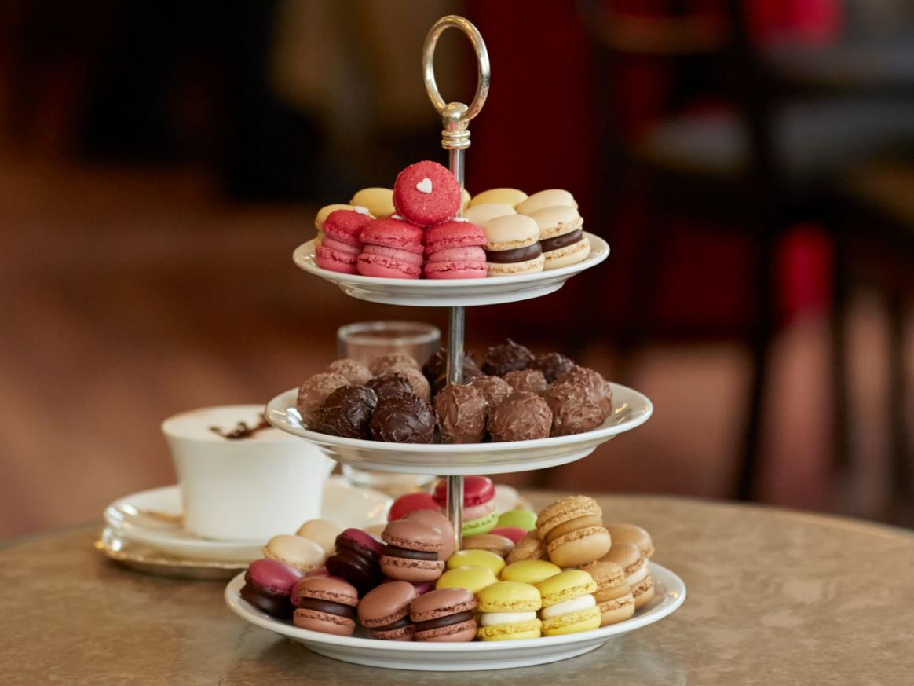
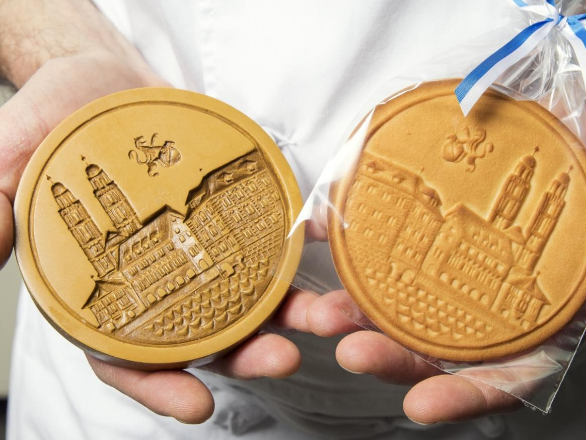

Geografia fisica
Il Canton Zurigo è situato a nord delle Alpi. I suoi cantoni confinanti sono Sciaffusa a nord, Argovia ad ovest, i cantoni di Zugo e Svitto a sud e quelli di Turgovia e San Gallo ad est. Il cantone confina anche con la Germania a nord (Land Baden-Württemberg). Gran parte del Lago di Zurigo si trova all'interno del cantone.
L'area del Canton Zurigo è di
1 729 km².
La maggior parte del cantone consiste di strette vallate fluviali che vanno verso il Reno, a nord del cantone. Nella parte nord-ovest e sud-est del cantone ci sono zone più montagnose.
La valle del fiume Linth si apre sul Lago di Zurigo. La Linth ne esce con il nome di Limmat; è questa la valle più importante del Canton Zurigo.
La valle del fiume Glatt origina dal Greifensee ed è separata dal Limmat da crinali. La valle del fiume Töss è simile a una gola. È posizionata nella parte est del cantone ed è separata dall'area del Toggenburg, nel Canton San Gallo da un'area montagnosa.
L'Hörnli (1133 m) è il punto più alto di questo crinale. La valle del fiume Sihl si trova nella parte ovest del cantone. Confluisce con la Limmat nella città di Zurigo. Il fiume Sihl è separato dal Lago di Zurigo dalla catena dell'Albis. L'Albishorn (915 m) è la vetta più alta di questa catena. La vetta più alta del cantone è l'Höhrohnen nella parte sud-est del cantone.
Storia
Il Canton Zurigo consiste di territori acquisiti dalla capitale, Zurigo fino al 1803. Il Canton Zurigo si unì alla Confederazione Elvetica nel 1351. La parte più bassa del cantone venne aggiunta ai territori di Zurigo nel 1362. La parte settentrionale fino al Reno entrò a far parte del cantone dopo che la città di Zurigo acquistò Winterthur dagli Asburgo nel 1467. La costituzione del cantone venne stilata nel 1869.
Politica
Potere legislativo ed esecutivo del Cantone:


Il parlamento cantonale ha 180 rappresentanti eletti ogni quattro anni. Il cantone è governato da un consiglio con sette membri (Regierungsrat).
Suddivisione politica e amministrativa
Distretti:
- Bezirk Zürich, con capoluogo Zurigo
- Bezirk Affoltern, con capoluogo Affoltern am Albis
- Bezirk Bülach, con capoluogo Bülach
- Bezirk Dielsdorf, con capoluogo Dielsdorf
- Bezirk Dietikon. con capoluogo Dietikon
- Bezirk Hinwil, con capoluogo Hinwil
- Bezirk Horgen, con capoluogo Horgen
- Bezirk Meilen, con capoluogo Meilen
- Bezirk Pfäffikon, con capoluogo Pfäffikon
- Bezirk Uster, con capoluogo Uster
- Bezirk Winterthur, con capoluogo Winterthur
Comuni:
La seguente è una lista delle municipalità del cantone (Politische Gemeinden).
Gastronomia
   “Birchermüesli”
“Zürich Geschnetzeltes”
“Luxemburgerli”
“Tirggel”
Gusto sano
Il classico
Dolce tentazione
Biscotti al miele
Famoso in tutto il mondo, il “Birchermüesli” è stato ideato dal medico e nutrizionista zurighese Max Bircher-Benner. A Zurigo si può mangiare ovunque.
Il piatto a base di carne di vitello accompagnato da rösti è particolarmente buono al Kronenhalle, dove viene servito tra opere di Picasso e Chagall.
Un pasticciere lussemburghese portò la ricetta dei macaron alla Confiserie Sprüngli. La ricetta fu affinata e, nel 1957, nacquero i “Luxemburgerli”.
Il Tirggel è un biscotto a base di miele, farina e spezie preparato soprattutto in occasione delle festività.